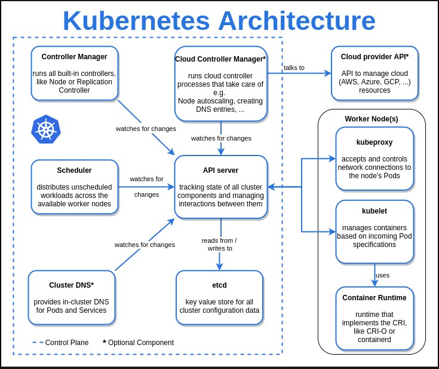

LEARNING kubernetes

Explore the docs »
Main Page
-
Code Page
-
Report Bug
-
Request Feature
Summary
TABLE OF CONTENT
About Project
This project aims to help students or professionals to learn the main concepts of kubernetes
Getting Started
This is an example of how you may give instructions on setting up your project locally. To get a local copy up and running follow these simple example steps.
Prerequisites
This is an example of how to list things you need to use the software and how to install them.
- git
- Virtual Box and extension
- Vagrant
Installation
Clone the repo
git clone https://github.com/marcossilvestrini/learning-kubernetes.git
Usage
Use this repository for get learning about kubernetes exam
Roadmap
- Create repository
- Create github action for automation tasks
- Create examples about kubernetes containers
- Create examples about kubernetes images
kubernetes Engine work with namespaces(PID,NET,IPC,MNT,UTS) and cgroups.
# Get a version of kubernetes
kubernetes --version
kubernetes Containers
# list containers
kubernetes container ls
kubernetes ps
# list containers id
kubernetes container ls -aq
kubernetes ps -aq
# list containers virtual size
kubernetes container ls -s
# create containers
kubernetes container create -it ubuntu
# run container
kubernetes run hello-world
# run container iterative
kubernetes run -it <image_name> bash
# execute command in container
kubernetes exec -it <container_id_or_name> <command>
# connect to kubernetes container
kubernetes container attach <CONTAINER ID>
# run container with name
kubernetes run -it --name ubuntu01 ubuntu bash
# create container with specified network
kubernetes run -it --name ubuntu01 --network skynet ubuntu bash
# create container with network host
kubernetes run -it --name ubuntu01 --network host ubuntu bash
# start containers
kubernetes container start ubuntu
# stop pause containers
kubernetes stop <container_id_or_name>
kubernetes stop -t=0 <container_id_or_name>
# Stop all containers
kubernetes stop $(kubernetes container ls -q)
# Pause\Unpause containers
kubernetes pause <container_id_or_name>
kubernetes unpause <container_id_or_name>
# delete container
kubernetes rm <container_id_or_name> --force
# delete all containers
kubernetes container rm $(kubernetes container ls -aq) --force
# forwarding port
kubernetes run -d -P <container_id_or_name>
kubernetes run -d -p 8080:80 <container_id_or_name>
# show map ports
kubernetes port <container_id_or_name>
# inspect container
kubernetes inspect <container_id_or_name>
# show container resources usage information
kubernetes container stat
kubernetes container stats <container_id_or_name>
# show process in execution in container
kubernetes container top <container_id_or_name>
# show container logs
kubernetes container logs <container_id_or_name>
kubernetes container logs -f <container_id_or_name>
# set limit of memory for container
kubernetes container run -it -m 512M --name testmemory debian
kubernetes container run -it --name testmemory2 --memory 1G debian
# set limit of cpu for container
kubernetes container run -it --cpus=0.5 --name testcpu nginx
# update ram|cpu resource in container
kubernetes container update -m 2048 testmemory
kubernetes container update --cpus=3 testcpu
# get infos memory and cpu
kubernetes inspect <container_id_or_name> | grep -i cpu
kubernetes inspect <container_id_or_name> | grep -i mem
(back to kubernetes containers)
kubernetes Images
# pull image
kubernetes pull <image_name>
# show local images images
kubernetes images
# show details of images
kubernetes inspect <image_id>
# show details of images layers
kubernetes history <image_id>
# remove kubernetes images
kubernetes rmi <image_id> --force
# remove all kubernetes images
kubernetes rmi $(kubernetes images -aq) --force
# commit changes in container
## install and customize your container after...then:
kubernetes commit -m "my container" CONTAINERID
kubernetes tag IMAGEID marcossilvestrini/apache_2:1.0
kubernetes Build
Build a kubernetes image
# first, create your kubernetesfile with your app
# Example kubernetesfile
FROM debian
RUN /bin/echo "HELLO kubernetes"
# then create a kubernetes image.
cd <path_of_your_kubernetesfile>
kubernetes build -t <kuberneteshub_username/image_name:tag>
# publish your image in kubernetes hub
kubernetes push <kuberneteshub_username/image_name:tag>
kubernetes Volumes
# list kubernetes volumes
kubernetes volume ls
# inspect kubernetes volumes
kubernetes volume inspect <volume_name>
# find kubernetes volumes
kubernetes volume inspect --format '{{ .Mountpoint }}' <volume_name>
# create kubernetes volume
kubernetes volume create <volume_name>
# delete kubernetes volume
kubernetes volume rm <volume_name>
# delete all kubernetes volume if not in user]
kubernetes volume prune
# create container with kubernetes bind mounts
kubernetes run -d --mount type=bind,source=/myfolder-volume,target=/app <image_name_or_id>
# mount volumes
kubernetes run -it -d -v <path_local_for_data>:<path_container_for_data> <image_name_or_id>
kubernetes run -d -v <volume_name>:/app <image_name_or_id>
# mount file
kubernetes container run -ti --mount type=bind,src=<path_local_for_data/file>,dst=<path_container_for_data/file> ubuntu
# share container volumes
## create container volume
kubernetes container create -v /data --name dbdata centos
## create containers
kubernetes run -d -p 5432:5432 --name pgsql1 --volumes-from dbdata \
-e POSTGRESQL_USER=kubernetes -e POSTGRESQL_PASS=kubernetes \
-e POSTGRESQL_DB=kubernetes kamui/postgresql
kubernetes run -d -p 5433:5432 --name pgsql2 --volumes-from dbdata \
-e POSTGRESQL_USER=kubernetes -e POSTGRESQL_PASS=kubernetes \
-e POSTGRESQL_DB=kubernetes kamui/postgresql
## find volume
kubernetes inspect dbdata | grep -i Source
## list containers data of shared volume
sudo ls /var/lib/kubernetes/volumes/<volume_id>/_data
# create backups of shared volume
kubernetes run -ti --volumes-from dbdata -v $(pwd):/backup debian tar -cvf /backup/backup.tar /data
kubernetes Network
# list networks
kubernetes network list
# inspect kubernetes network
kubernetes network inspect <network_name>
# create kubernetes network bridge
kubernetes network create --drive bridge <network_name>
# delete kubernetes network
kubernetes network rm <network_name>
kubernetes Compose
# list containers|services
kubernetes-compose ps
kubernetes-compose -f configs/kubernetes/apps/app-silvestrini/kubernetes-compose.yaml ps
# create containers|services
kubernetes-compose up
kubernetes-compose up -d
kubernetes-compose -f configs/kubernetes/apps/app-silvestrini/kubernetes-compose.yaml up
kubernetes Stack
# create stack|services
kubernetes stack deploy -c kubernetes-compose.yml first
# list stacks|services
kubernetes stack ls
# view stack services
kubernetes stack services first
# view detailed stack|services | all containers
kubernetes stack ps first
# remove stack|services
kubernetes stack rm <stack_service_name>
kubernetes Swarm
# init kubernetes swarm with manager
kubernetes swarm init --advertise-addr 192.168.0140:2377
# get swarm token
MANAGER_TOKEN=$(kubernetes swarm join-token manager -q)
WORKER_TOKEN=$(kubernetes swarm join-token worker -q)
# join server in kubernetes swarm
kubernetes swarm join --token $MANAGER_TOKEN 192.168.0.140:2377
# promote node worker to manager
kubernetes node promote debian-server02
# list swarm nodes
kubernetes nodes ls
# inspect nodes
kubernetes node inspect <node_name>
# leave node
kubernetes swarm leave --force
# delete node
kubernetes node rm debian-server01
# list services
kubernetes service ps
kubernetes service ps webserver
# create service
kubernetes service create --name webserver --replicas 5 -p 8080:80 nginx
kubernetes service create --name webserver --replicas 5 -p 8080:80 --mount type=volume,src=teste,dst=/app nginx
# inspect service
kubernetes service inspect webserver
# scale service
kubernetes service scale webserver=10
kubernetes Secrets
# create secret
echo 'mypassword' | kubernetes secret create my_password -
kubernetes secret create my_secret2 my_secret.txt
# list secrets
kubernetes secret ls
# inspect secrets
kubernetes secret inspect my_secret2
# delete secrets
kubernetes secret rm my_secret2
# create service with secrets
kubernetes service create --name web --detach=false --secret my_password nginx
Contributing
Contributions are what make the open source community such an amazing place to learn, inspire, and create. Any contributions you make are greatly appreciated.
If you have a suggestion that would make this better, please fork the repo and create a pull request. You can also simply open an issue with the tag "enhancement". Don't forget to give the project a star! Thanks again!
- Fork the Project
- Create your Feature Branch (
git checkout -b feature/AmazingFeature) - Commit your Changes (
git commit -m 'Add some AmazingFeature') - Push to the Branch (
git push origin feature/AmazingFeature) - Open a Pull Request
License
- This project is licensed under the MIT License * see the LICENSE.md file for details
Contact
Marcos Silvestrini - marcos.silvestrini@gmail.com
Project Link: https://github.com/marcossilvestrini/learning-kubernetes